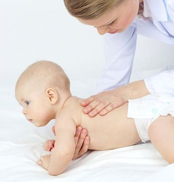
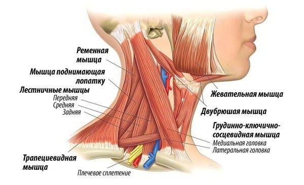
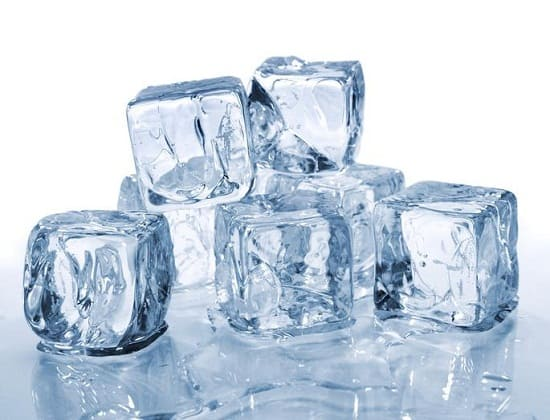

Хотя боль в шее и растяжение часто случаются у взрослых, родители, как правило, не ожидают, что у их маленьких детей могут быть такие же проблемы. Тем не менее боль в шее встречается у детей не так уж редко. При этом они могут плакать при пробуждении и им трудно двигать шеей. Они могут держать ее наклоненной или повернутой на одну сторону. Они могут кричать, когда вы пытаетесь повернуть их голову. Но как бы устрашающе это ни выглядело, это, как правило, обычное безобидное растяжение мышц или связок. Ниже приведены наши советы, которые помогут разрешить эту проблему и распознать, если происходит что-то более серьезное.
ПРИЧИНЫ
Вот причины того, почему шея вашего ребенка может внезапно начать болеть:
• растяжение шеи. Иногда быстрый поворот головы или сон в позе, при которой шея повернута под необычным углом, может вызвать внезапное и очень болезненное растяжение одной из мышц или связок в задней или боковой части шеи. Травма при автомобильной аварии также может вызвать растяжение шеи (хлыстовая травма). Ребенок будет держать голову прямо или повернутой в самое удобное положение и описывать сильную резкую боль при попытке повернуть голову;
• инфекции горла. Это может вызвать боль в передней или боковой части шеи. Это не так больно, как растяжение, и ребенок способен двигать шеей без особых затруднений.
• менингит. Многие родители беспокоятся об этом каждый раз, когда у ребенка лихорадка и боль в шее. Важно определить, какая часть шеи действительно болит. Менингит вызывает боль в задней части шеи, и ребенок не сможет посмотреть вниз, потому что растяжение шеи усиливает боль. Если болит передняя или боковая часть, значит, лихорадка и боль, скорее всего, вы
званы не менингитом. Если боль в задней части шеи, но нет ни лихорадки, ни головной боли, это тоже не менингит;
• растяжение и спазм главной мышцы шеи. Внезапные спазм и боль в мышце, которая идет от участка позади уха до грудины, послужат причиной того, что ребенок будет держать голову под наклоном и повернутой на одну сторону. Это похоже на обычное растяжение шеи, но происходит с главной мышцей, отвечающей за поворот головы (в отличие от растяжения второстепенной мышцы или связки в задней части шеи). Ребенок может указать на то место, где болит, так что вы будете знать, какая сторона напряжена и где спазм.

ЛЕЧЕНИЕ
Вот некоторые варианты лечения при обычном растяжении шеи:
• лед. Прикладывайте пакет со льдом к распухшему участку (ваш ребенок должен быть способным показать его) на 20 минут (но не более) каждый час в течение всего дня. Интенсивное охлаждение может помочь избавиться от боли намного быстрее;
•ибупрофен. Это противовоспалительное и болеутоляющее творит чудеса при растяжении шеи. Он не просто временно облегчает боль он помогает боли пройти быстрее Ваш ребенок может принимать каждые 6 часов.
Этим исчерпываются способы лечения, к которым стоит прибегнуть. Боль должна пройти в течение ближайших 3 дней.

КОГДА БЕСПОКОИТЬСЯ
Пока растяжение постепенно проходит, вам не стоит беспокоиться. Вот некоторые ситуации, требующие посещения врача:
• автомобильная авария или травма во время занятий спортом. Если ваш ребенок жалуется на боль в шее после травмы или аварии, лучше обратиться к врачу, чтобы убедиться в отсутствии повреждений шейного отдела позвоночника. Также полезно будет зарегистрировать травму на случай дальнейших разбирательств;
• неврологические симптомы, такие как онемение, покалывание или слабость в руках и ногах;
• сильная боль. Если с болью не удается справиться с помощью льда и ибупрофена, это может быть признаком более серьезной травмы.
Здоровье ребенка от докторов Сирс / Сирс У. и др.